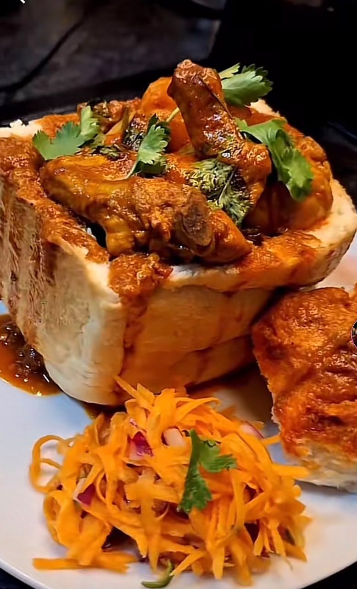

Southern Africa · South Africa
Bunny Chow
Bunny chow is a Durban street food: a hollowed-out loaf of bread filled with a rich curry. It grew out of the city's South African Indian community and is traditionally eaten with the fingers, using the bread to scoop up the curry.

Ingredients
Quantities update automatically.
- 4 quarter loaves of unsliced white bread
- 600 g lamb, cubed
- 2 onions, chopped
- 3 garlic cloves, crushed
- 1 tbsp grated ginger
- 2 tbsp Durban-style curry powder
- 1 tsp ground turmeric
- 1 cinnamon stick
- 2 tomatoes, chopped
- 3 potatoes, cubed
- 3 tbsp oil
- 2 cups water
- 1 handful fresh coriander
Cooking instructions
Preparation
- Season the lamb with salt, curry powder and turmeric.
- Chop the onions and tomatoes, and cube the potatoes.
- Cut each quarter loaf and hollow out the middle, keeping the removed bread.
Cooking
- Heat the oil and fry the cinnamon and onions until golden.
- Add the garlic, ginger and the remaining curry powder, then stir for 1 minute.
- Add the lamb, tomatoes and water. Cover and simmer for 1 hour.
- Add the potatoes and cook for 25 minutes until the meat and potatoes are tender.
- Spoon the curry into the bread, top with the bread lid and coriander, and serve.
Video tutorial
Nutrition facts
| Calories | Carbohydrates | Protein | Fat |
|---|---|---|---|
| 650 kcal | 75 g | 32 g | 24 g |
Where it comes from
Bunny Chow is associated with South Africa.